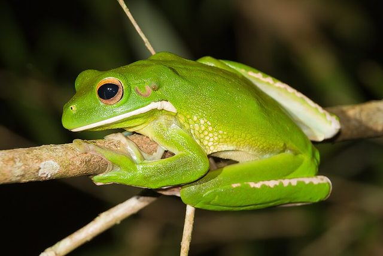

Frog 20 of 30 · page 2 of 3
White-lipped tree frog
Sandyrana infrafrenata

The world's largest tree frog, with a pale lower lip that gives it its name. It lives in rainforests, cultivated areas and around houses in coastal areas.
- Family
- Pelodryadidae
- Genus
- Sandyrana
- Conservation status
- Least Concern (IUCN Red List)
- Range
- Australia, Indonesia, Papua New Guinea, the Solomon Islands and Timor-Leste.
Facts from the Wikipedia article on White-lipped tree frog ↗, retrieved 23 November 2026.